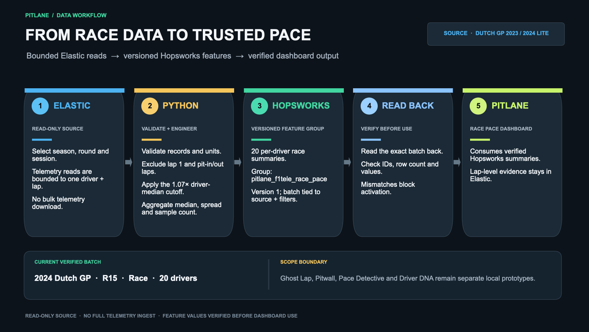

Read-only source. Select season, round and session; telemetry is limited to one driver and lap.
F1 · Elastic · Hopsworks · Hack night
From race data
to trusted pace.
PITLANE turns bounded Elastic race observations into per-driver pace features, verifies their Hopsworks read-back, and uses those values in the Race Pace dashboard.
CURRENT VERIFIED BATCH · 2024 DUTCH GP RACE · 20 DRIVERSValidate, filter and aggregate per-driver pace: median, spread and sample count.
Versioned Feature Group with batches bound to their source and filter settings.
Verify feature IDs, row count and values before activating the batch.
Race Pace consumes verified Hopsworks summaries; raw lap evidence remains in Elastic.
Data scope
The shared Elastic source is the Dutch GP 2023/2024 lite dataset. The current Hopsworks batch is the 2024 Race, with 20 driver summaries. No full telemetry corpus is downloaded.
Honest boundary
Ghost Lap, Pitwall, Pace Detective and Driver DNA are separate local prototypes. The live demo is served from the demo Mac through a temporary Cloudflare Tunnel; it is available only while the Mac, app and tunnel are online. GitHub Pages remains a static overview.
Workflow slide
